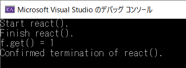
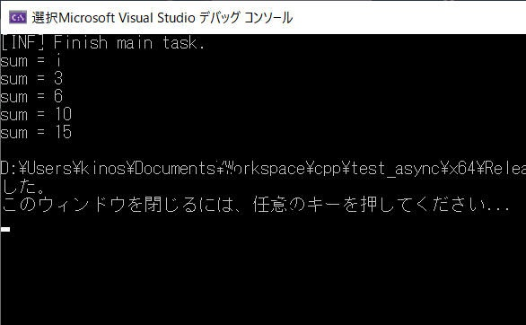

c++11 でスレッド関連のライブラリが大幅に拡張されました。 std::thread と並んで代表的な std::async について記載します。
std::thread は promise, future
を併用しないとスレッドから呼び出し元へ値を戻すことができません。また例外が発生した場合を伝えることもできません。
std::async
は特に意識することなくスレッドの演算結果を呼び出し元へ戻す機能をサポートしており、例外発生時の実装も同様です。
個人的には std::thread
はもはや使用せずに std::async のみで良いのではと考えます。
"Effective Modern C++" の項目35 にも「スレッドベースよりもタスクベースプログラミングを優先する」って書いてありますしね。
これの意味は「std::thread よりも std::async を使いましょう」という内容です。
1. シンプルな例
2.
一時停止状態のスレッドを作る
3. async で作成したスレッドの終了を待たずに main を終了したらどうなる？
[概要]
まずはシンプルなサンプルを作ってみます。
少し処理の重たい関数 worker() を準備して、これを std::async で実行します。
[評価環境]
| コンパイラ : | Visual Studio 2017 pro., | Version 15.4.2 |
| OS : | Windows10 home, | Version 1803 |
[プログラムソース "async.cpp"]
#include <stdio.h>
#include <tchar.h>
#include <iostream>
#include <vector> // std::vector
#include <future> // std::async, std::future
#include <windows.h> // OutputDebugString
using namespace std;
int worker(const vector<int>& data)
{
int sum = 0;
for (int i : data) {
// 重たい処理
this_thread::sleep_for(chrono::milliseconds(2000));
sum += i;
cout << "sum = " << sum << endl;
}
//throw std::wstring(L"test");
return sum;
}
int main()
{
vector<int> data = { 1, 2, 3, 4, 5 };
// worker() 関数を実行する
// 引数が const なので cref() を使用。変更可能な場合は ref() で参照渡し。
// future<int> f = std::async( launch::async, worker, cref(data) ); // 非同期実行
// future<int> f = std::async( launch::deferred, worker, cref(data) ); // 同期実行
// future<int> f = std::async( launch::async | launch::deferred, worker, cref(data) ); // 非同期/同期 どちらでもOK
// future<int> f = std::async( worker, cref(data)); // 非同期/同期 どちらでもOK
auto f = std::async( launch::async, worker, cref(data)); // auto による推奨の使用方法。非同期実行。
try {
if (f.wait_for(chrono::seconds(0)) == future_status::deferred) {
// launch::deferred is selected.
cout << f.get() << endl;
}
else {
// launch::async is selected.
while (1) {
if (f.wait_for(chrono::milliseconds(500)) == std::future_status::ready) {
cout << f.get() << endl;
break;
}
else {
cout << "wait..." << endl;
}
}
}
}
catch (std::wstring errorMessage) {
OutputDebugString(errorMessage.c_str());
}
catch (...) {
// worker() 関数内で例外創出された場合の処理
OutputDebugString(_T("exception catched."));
}
return EXIT_SUCCESS;
}
［補足説明］
サンプルプログラム ダウンロード
一時停止状態のシステムスレッドを作成してみます。
すなわち、スレッドで何かを処理する時が来たらすぐに開始できるようにあらかじめスレッドを作成しておき、作成のスレッドのオーバーヘッドによる遅延を回避する例です。または、実行開始前にスレッドに何かしらのせえっていを行う必要があるため一時停止状態のスレッドを作成する場合もあるでしょう。
スレッドを一度だけ一時停止状態にしたい場合、void future を用いるのが妥当な選択です。この技法の要点を以下に示します。
[評価環境]
| コンパイラ : | Visual Studio 2019 pro., | Version 16.3.10 |
| OS: | Windows10 home, | Version 1909 |
[プログラムソース： "test_async_02.cpp"]
#include <iostream>
#include <future> // std::async
using namespace std;
int react( int count )
{
cout << "Start react()." << endl;
for (int i = 0; i < count; ++i) {
this_thread::sleep_for(chrono::milliseconds(1000));
}
cout << "Finish react()." << endl;
return 1;
}
int main()
{
promise<void> p;
int wait_count = 5;
future<int> f = async(launch::async, [=,&p]
{
p.get_future().wait(); // p.set_value() の実行まで待機
return react(wait_count); // react() を実行
} );
this_thread::sleep_for(chrono::seconds(1)); // 何か・・・をしてから、
p.set_value(); // スレッドを起動します。
cout << "f.get() = " << f.get() << endl; // react() の完了を待って戻り値を取得
cout << "Confirmed termination of react()." << endl;
}
[実行結果]

[概要]
std::thread だと join または detatch が必須です。
std::async の場合は detatch
に相当する機能がないけれど、終了確認せずに worker スレッドを放置したらどうなるのでしょうか。
確認してみました。
どうやら特に考慮は不要みたいです。
main タスクが終了しても async タスクの動作は継続しました。
逆に main タスクが終了したにもかかわらず async タスク側が残ってしまう場合があるので、必要に応じて
main タスク終了時に別スレッドを適切に終了するという処理が必要そうです。
[環境]
| コンパイラ : | Visual Studio 2019 pro., | Version 16.6.0 |
| OS: | Windows10 home, | Version 1909 |
"test_async_03.cpp"]
#include <iostream>
#include <vector> // vector
#include <chrono> // chrono
#include <thread> // this_thread
#include <future> // async, future, future_status
#include <windows.h> // OuputDebugString
#include <tchar.h> // _T
using namespace std;
int worker(const vector<int>& data)
{
int sum = 0;
for (int i : data) {
// 重たい処理
this_thread::sleep_for(chrono::milliseconds(2000));
sum += i;
cout << "sum = " << sum << endl;
}
//throw std::wstring(L"test");
return sum;
}
int main()
{
vector<int> data = { 1, 2, 3, 4, 5 };
// worker() 関数を実行する
future<int> f = std::async( launch::async, worker, ref(data) ); // 非同期実行
// このまま worker スレッドの終了を待たずに終了... どうなる？
// std::thread なら join または detatch が必要だけど...
cout << "[INF] Finish main task." << endl;
return EXIT_SUCCESS;
}
[実行結果]

記載：